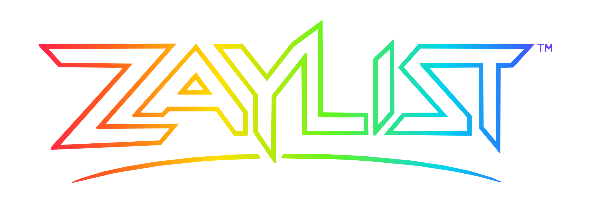
ZAYLIST Primary
Main website wordmark. Preserve existing glitch, glow, calm-mode, and responsive treatments around the artwork.
Migration / production targetThe governed home for the Zaylist wordmark, Prime Z, city edition, current product identities, future NEXT marks, and background variants.
Prime Z · the compact symbol above the complete wordmark family

Main website wordmark. Preserve existing glitch, glow, calm-mode, and responsive treatments around the artwork.
Migration / production target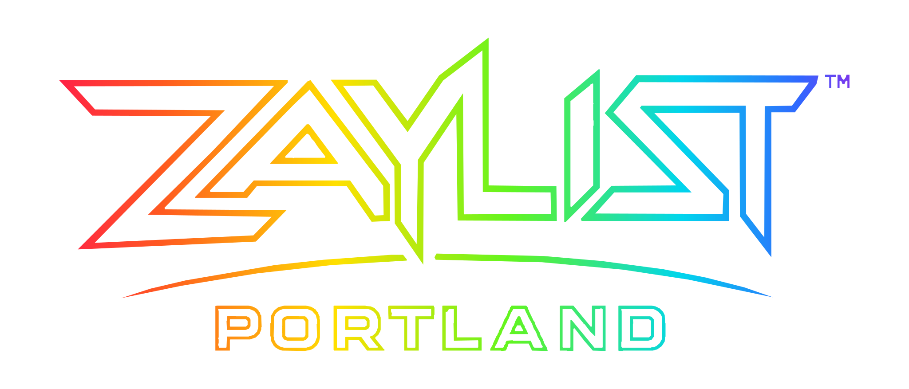
Optional city edition. It does not replace the primary mark by default.
Library variant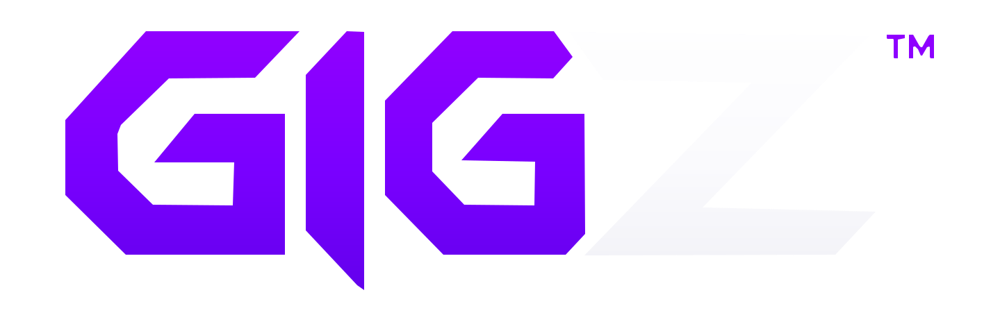
Work-board identity and branded page title.
Current product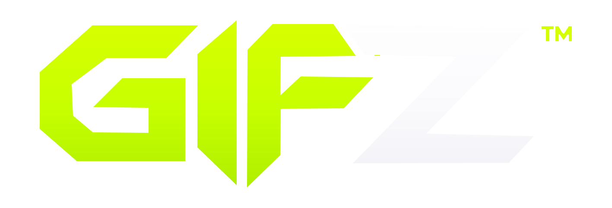
Gifting-board identity and branded page title.
Current product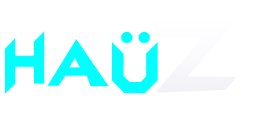
Exact public housing identity. Current corner composition remains a candidate even when used as owner-directed preview art.
Candidate / current title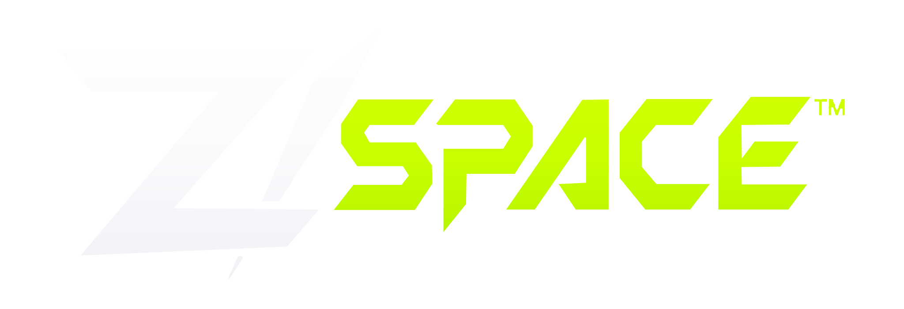
Persistent community-space identity. Lives on NEXT until the product has a dedicated home.
NEXT / future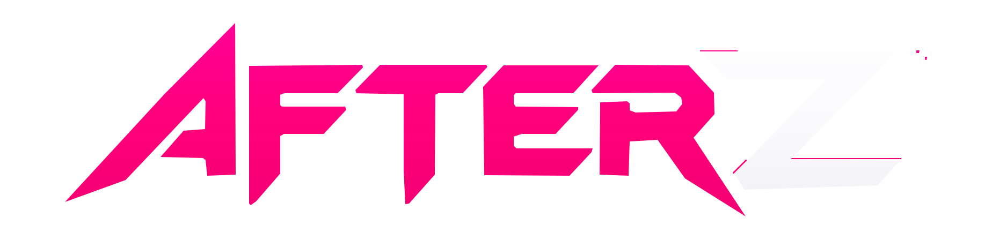
Temporary continuation and next-stop identity.
NEXT / future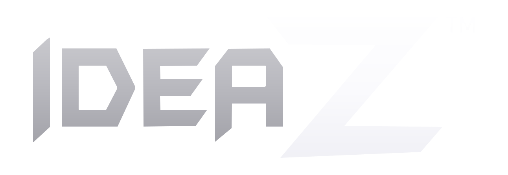
Idea-submission and build-next identity.
Current supporting card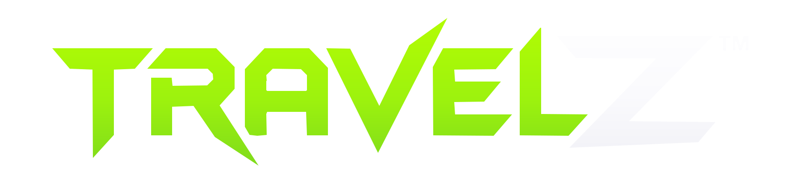
Outdoor, trip, and travel-companion identity.
NEXT / future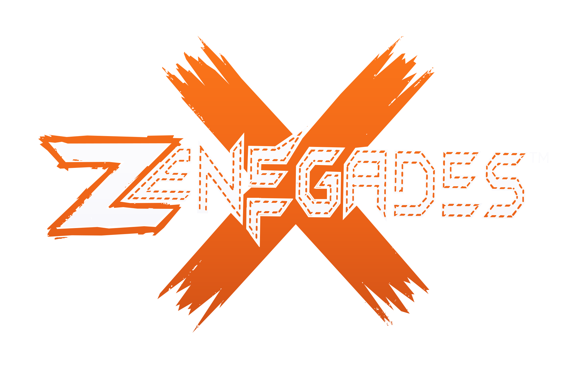
Casual gathering identity. Preserve the oversized orange X and distressed construction.
NEXT / futureConsent-gated adult community identity and Darkroom roadmap mark.
NEXT / deferred productEvery SVG supplied for this migration is shown below. “On black,” display, solid-white, and candidate files are treatments or states of an identity—not additional product names.
zaylist-primary.svg
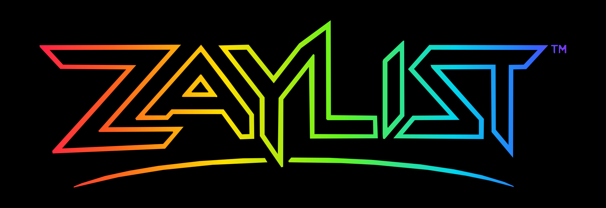
zaylist-primary-on-black.svg
zaylist-portland.svg
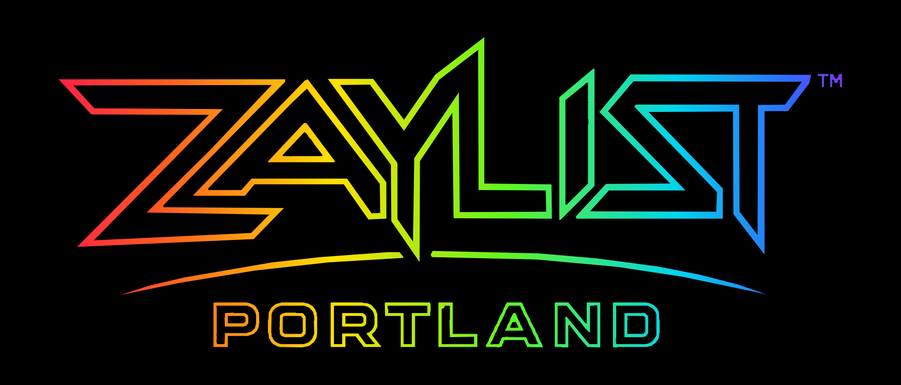
zaylist-portland-on-black.svg
prime-z.svg
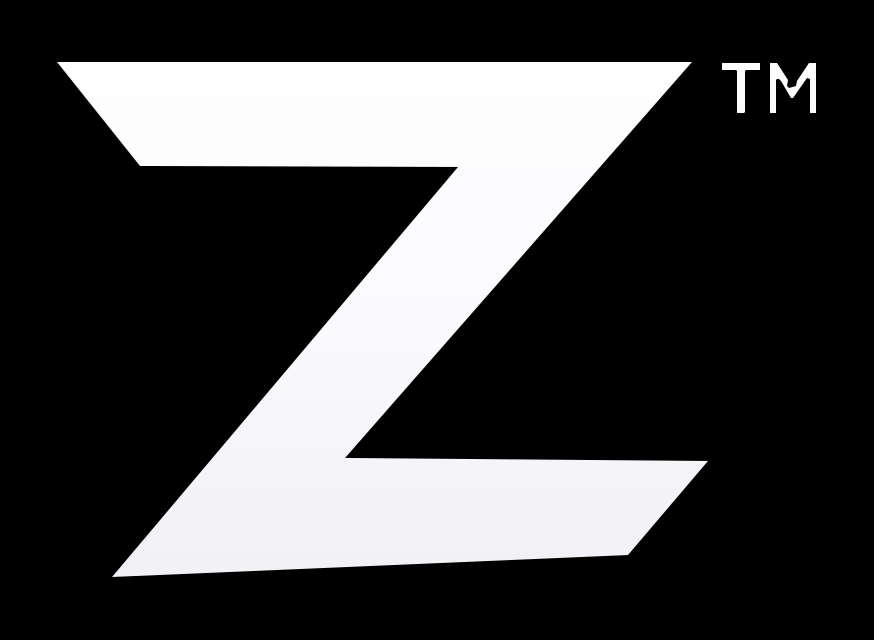
prime-z-on-black.svg
gigz.svg
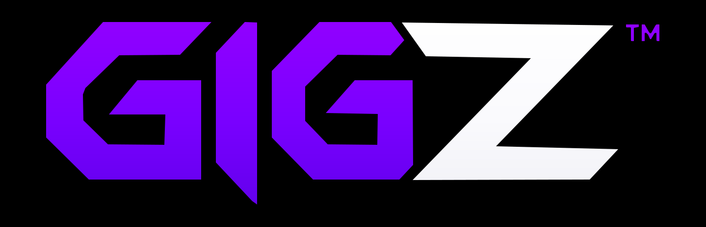
gigz-on-black.svg
gifz.svg
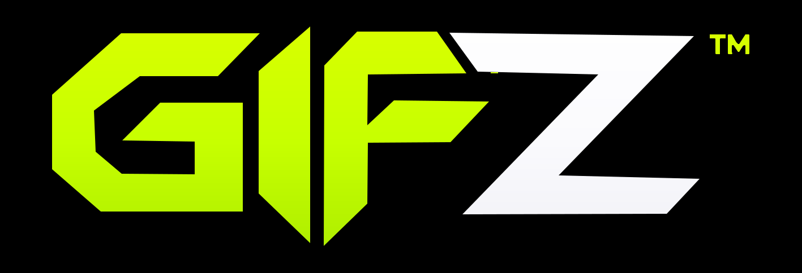
gifz-on-black.svg
THE-HAUZ-Corner-Candidate.svg
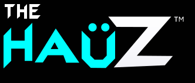
THE-HAUZ-Corner-Candidate-on-Black.svg
ideaz.svg
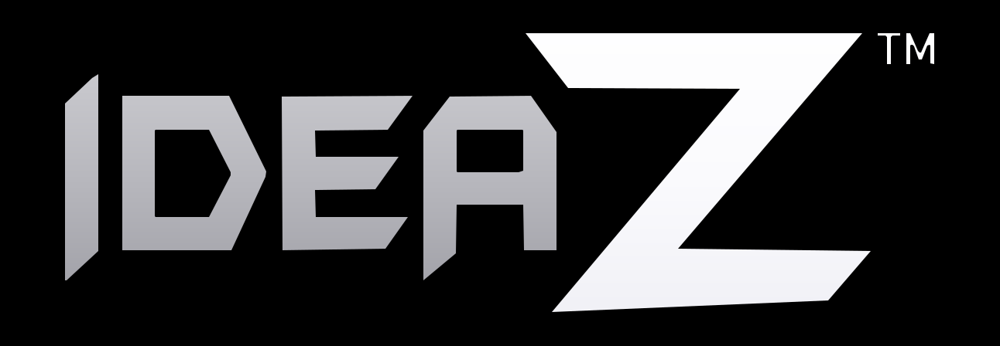
ideaz-on-black.svg
z-space.svg
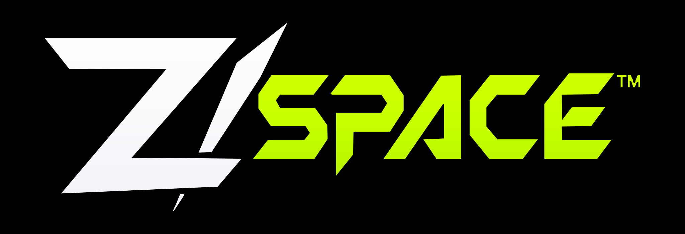
z-space-on-black.svg
afterz.svg
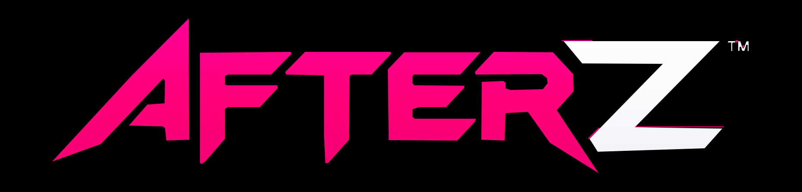
afterz-on-black.svg
travelz.svg
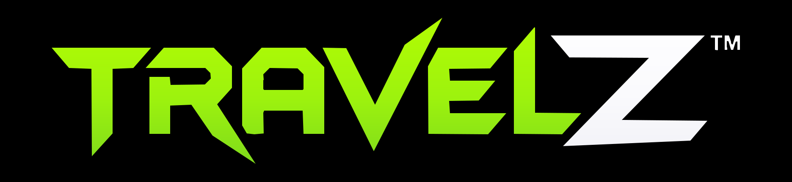
travelz-on-black.svg
zenegades.svg
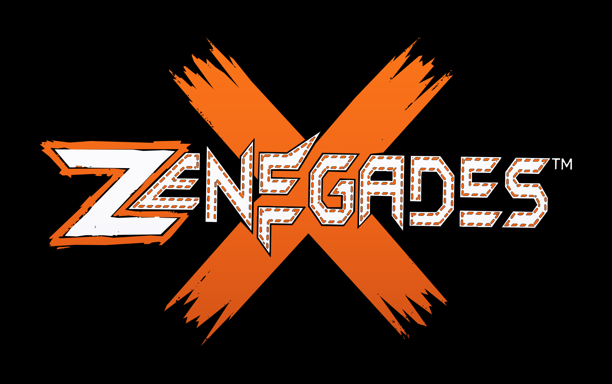
zenegades-on-black.svg
zaydark-dark background-finish-pixel-locked.svg
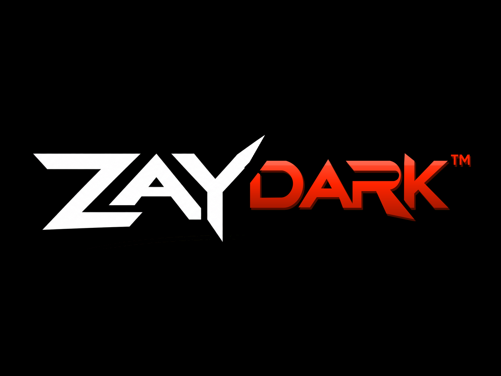
zaydark-display-finish-pixel-locked.svg
ZAylist Solid White Dark Short.svg
ZAylist Solid White Dark.svg
ZAY logo-system wordmarks, approved product names, and lockups built directly from supplied master glyphs.
Alter proportions, angles, stroke weight, blade terminals, clear space, connection alignment, or arc placement.
Tucker has directed the primary website migration and the use of current family artwork on NEXT and selected branded titles. That direction does not make every future product implemented. Preserve current, migration, candidate, NEXT, deferred, and library-only labels.